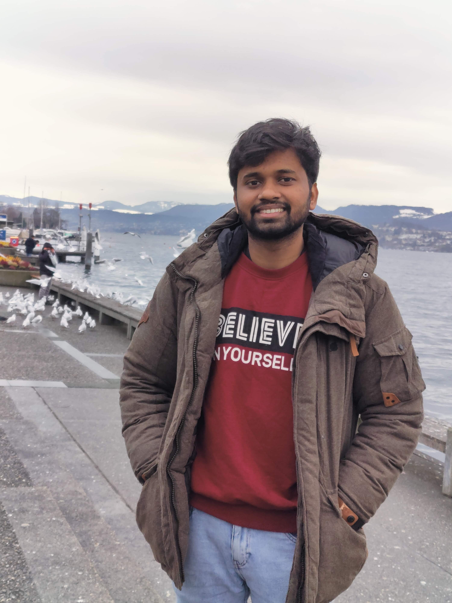

Backend & distributed systems
Designing services that handle growth, failure, observability, and integration complexity without sacrificing developer velocity.
GolangC#Python.NETNode.jsSQLElasticsearch
Senior Software Engineer · Backend · Cloud
I’m Sushrut Kasture, a software engineer focused on backend platforms, cloud-native services, and polished product experiences. I enjoy turning ambiguous ideas into resilient systems, useful tools, and open-source projects that people actually use.
What I bring
I work comfortably across system design, APIs, data stores, browser extensions, automation, and infrastructure. The common thread: clean abstractions, measurable impact, and software that remains operable after launch.
Designing services that handle growth, failure, observability, and integration complexity without sacrificing developer velocity.
Cloud-based solutions, containerized workloads, deployment pipelines, and production-first operational thinking.
Building approachable interfaces and automation workflows that reduce friction for users and make complex tasks feel simple.
Curious, collaborative, and impact-oriented. I like learning quickly, prototyping pragmatically, and then hardening the pieces that matter.
Selected work
Inspired by strong engineering portfolios, this section emphasizes concise case-study context: problem, approach, impact, and stack.
An open-source Chrome extension that automated form filling for India’s CoWIN vaccination booking flow. It helped hundreds of thousands of people book appointments faster and became a top-trending repository in its category.
A TypeScript Chrome extension for redirecting requests and injecting custom headers. It doubles as a practical browser-extension learning project that explains request interception, redirects, and ad-blocking mechanics.
A tutorial-style React interface for learning gRPC-Web end to end, including protobuf generation, a Python backend service, and a proxy layer that connects browser clients to gRPC services.
A small Chrome extension that automatically reloads a tab every 10 seconds, built for moments when you are waiting for a webpage to change and want lightweight refresh automation.

About
I graduated from the National Institute of Technology, Warangal in 2018 with a Bachelor's degree in Electronics and Communication Engineering. Since then, I’ve built web applications, backend services, automation tools, and cloud-based systems while continuously looking for challenging ideas to learn from and ship.
Let’s connect
I’m always happy to exchange ideas, discuss engineering problems, or collaborate on work that needs thoughtful execution.